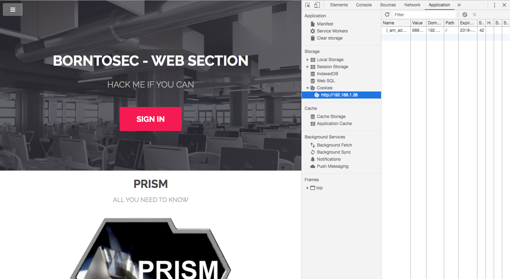
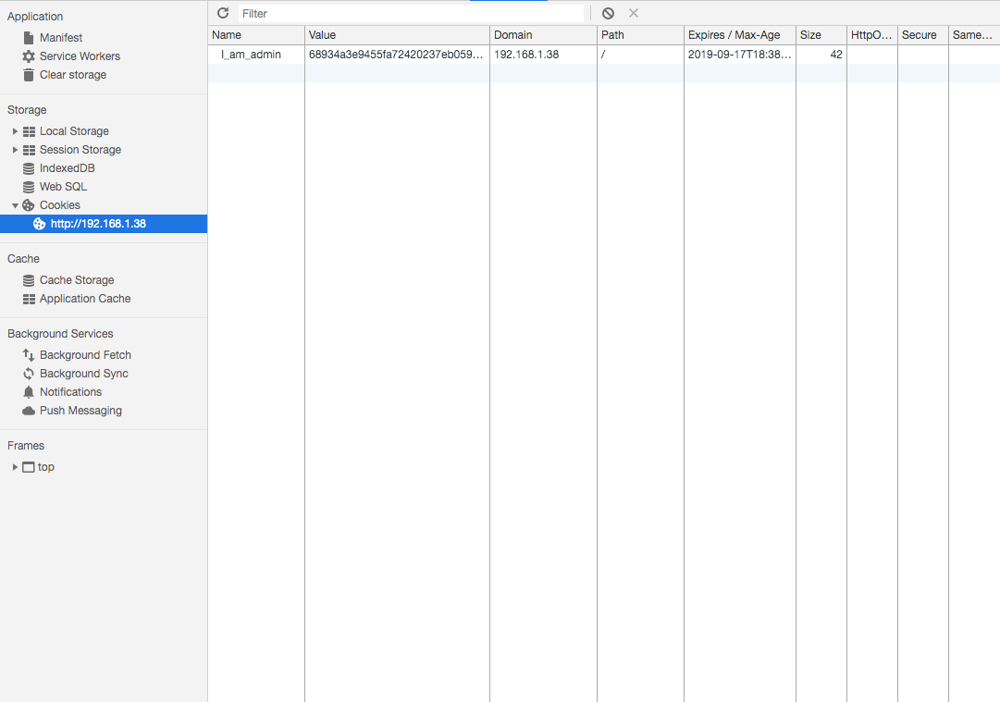
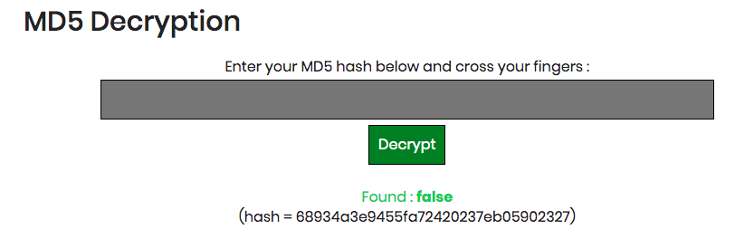
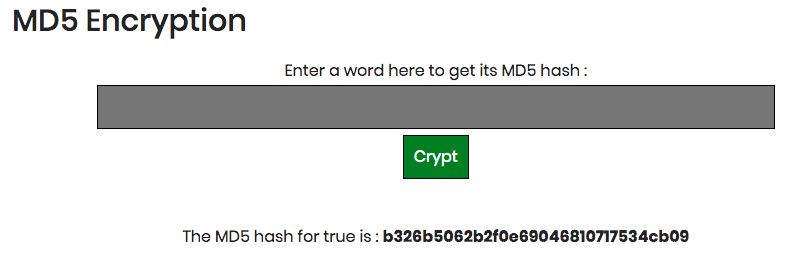
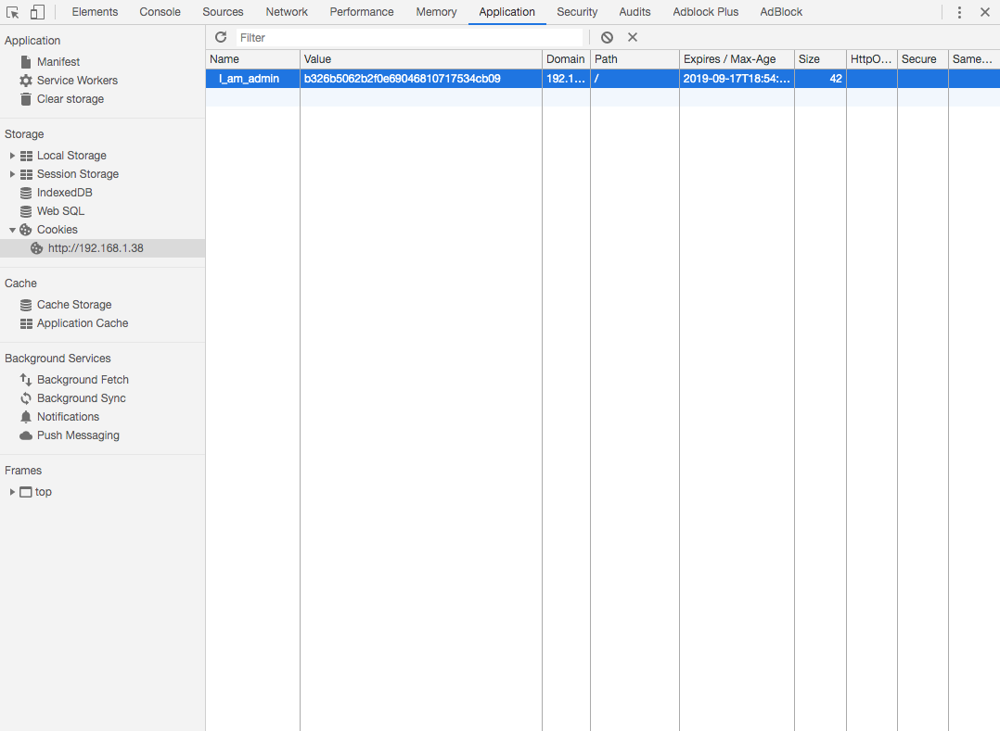
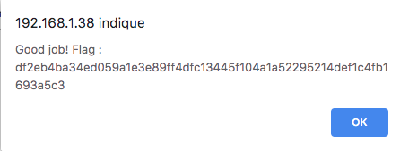

Si on vas dans la console de developpement de chrome et on vas dans Application, on peut voir les cookies utilises par le site
Dans la partie cookie on peut voir plusieurs valeurs dont la nom du cookie et sa valeur. Ici on vas recuperer la valeur du cookie qui est du md5
On vas sur un site pour decrypter le md5 qui la nous donne false
On vas sur un site pour crypter du md5 la valeur a crypter sera true
On change la valeur du cookie par sa nouvelle valeur
On recharge la page
A la place d'utiliser des cookies pour sauvegarder si tu es admin ou pas, il est mieux d'utiliser les variables de session